03 / Things to Do
Activities & Experiences
There is as much to discover in a shared meal or a woven pattern as there is along the coast.
Out in the Open
Adventure & Nature
-
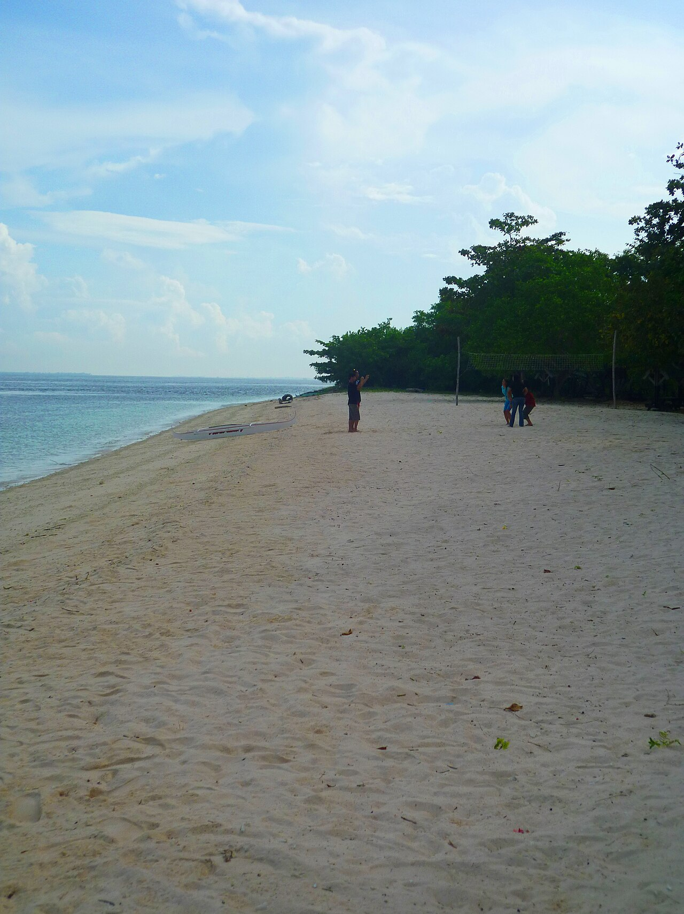
Great Santa Cruz Island: Take an arranged day trip to explore its famous pink-tinged coralline beach. -
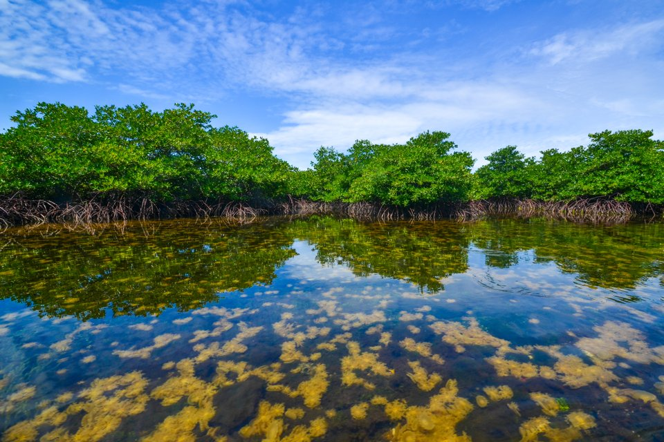
Mangrove Lagoon Tour: Explore the island’s mangrove lagoon with an authorized local guide. -
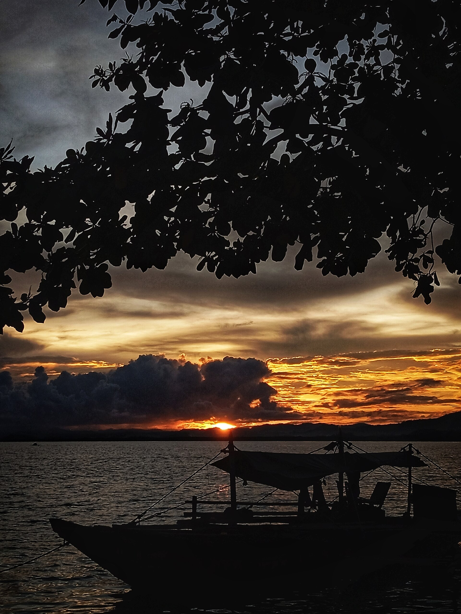
Buluan Island Coast: Enjoy the coastal scenery at Buluan Island in Zamboanga Sibugay. -
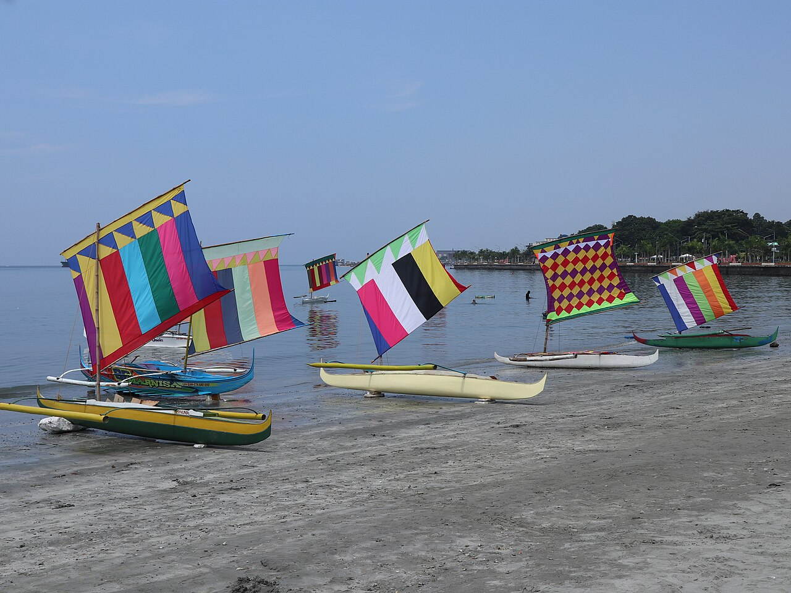
Shoreline Photography: Photograph the coast and vintas while leaving natural habitats undisturbed.
Meet the Makers
Culture & Heritage
-
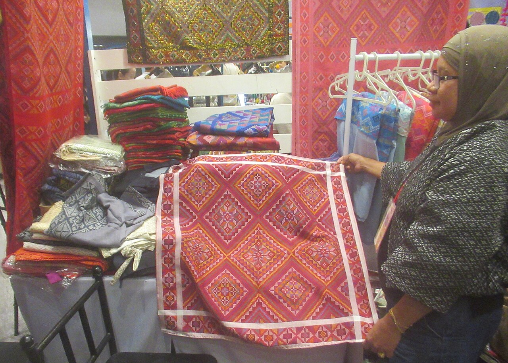
Yakan Weaving Village: Visit Upper Calarian in Zamboanga City to see weavers at work. -
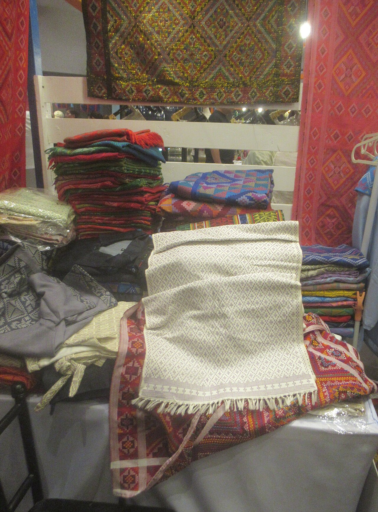
Support Local Artisans: Learn about traditional crafts and buy directly from local makers. -
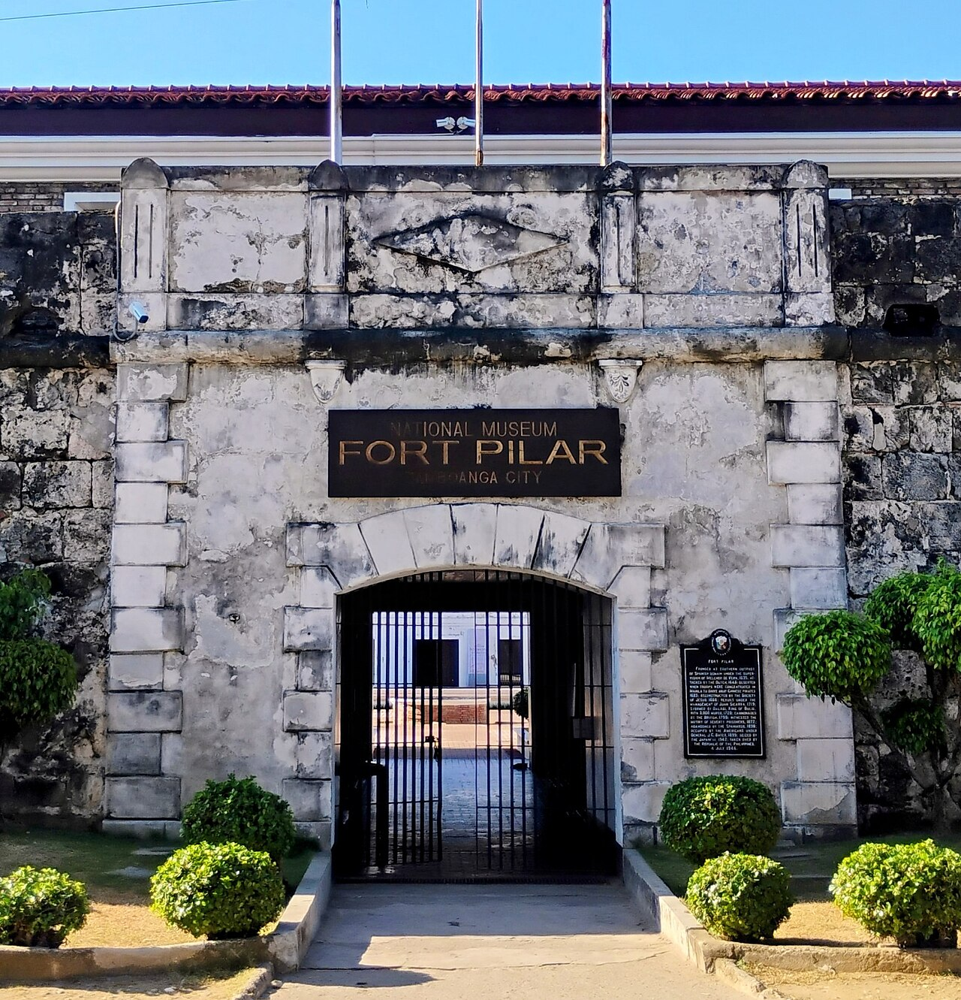
Fort Pilar & Museum: Explore the National Museum galleries and outdoor Marian shrine. -
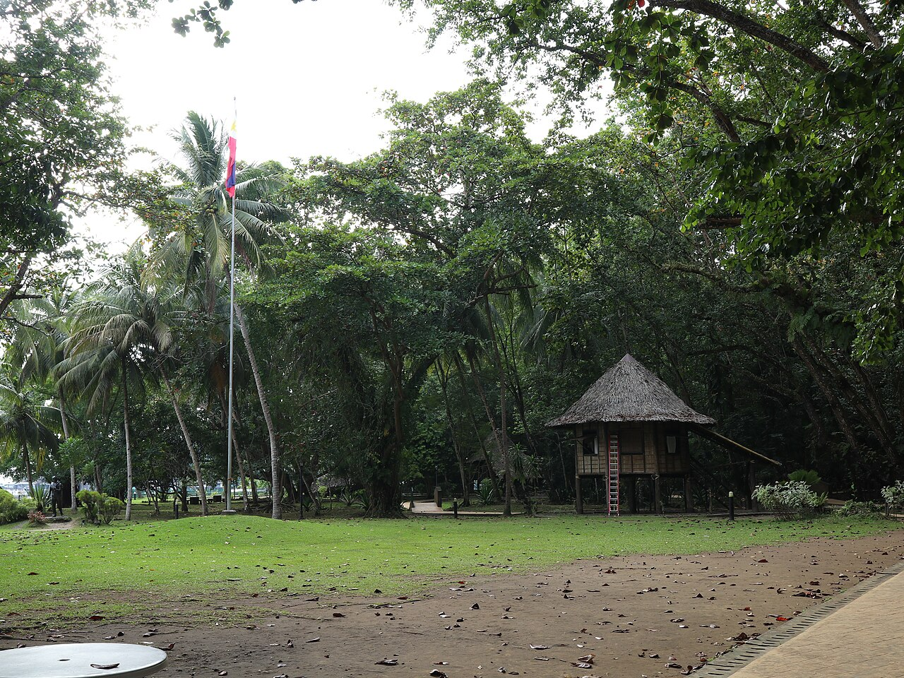
Rizal Shrine Grounds: Walk through the historic coastal exile estate in Dapitan City.
Local Flavors
Food & Dining
-
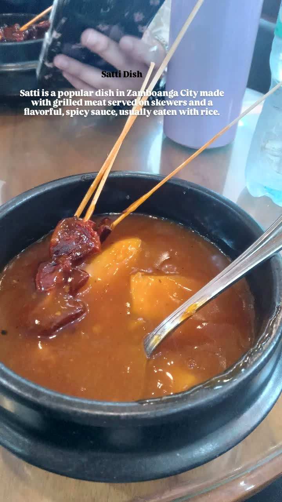
Try Satti: Grilled skewers served with rice cubes in a warm, sweet, and spicy sauce. -
Share Curacha: Deep-sea crab cooked with Zamboanga’s famous Alavar sauce.
-
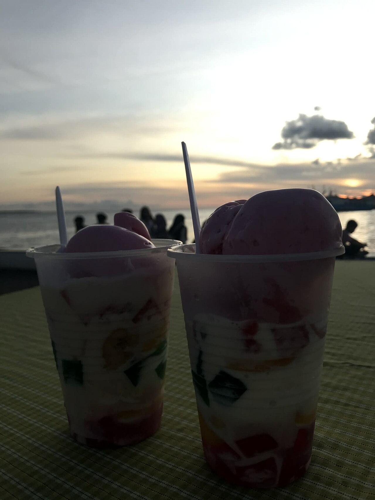
Taste Knickerbocker: Refreshing local fruit, jelly, and ice-cream dessert. -
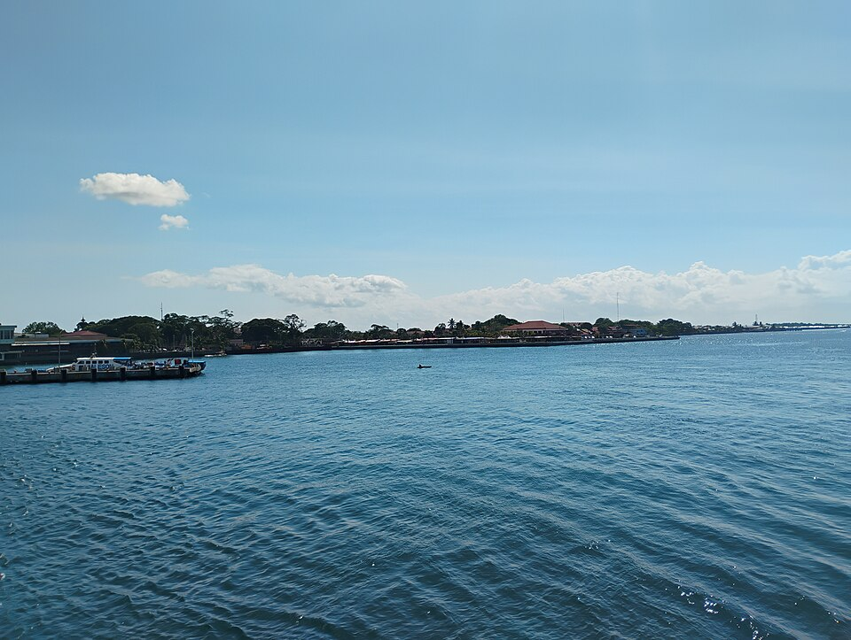
Stroll Paseo del Mar: Enjoy seaside dining and evening waterfront views.
Be a thoughtful guest: Ask permission before
photographing people or weaving demonstrations, dress respectfully at
heritage sites, and support local artisans fairly.